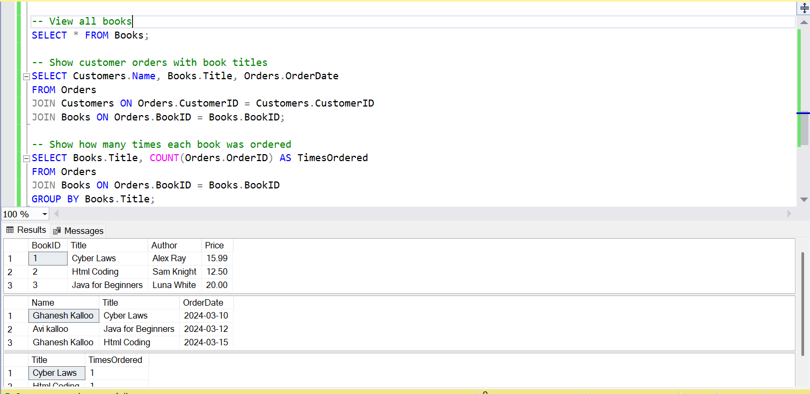

☕ Coffee Website
This is a simple HTML coffee shop webpage created as part of my web development learning. It includes basic layout and visual elements using only HTML.
- 🛠 Technology: Pure HTML
- 📁 Live Preview:
View Coffee Website
- 📌 Designed as part of front-end practice
🌐 Basic Network Configuration – Cisco Packet Tracer
This project demonstrates a basic network topology with a router, switch, and multiple PCs. The devices are connected and configured with static IPs for connectivity testing in Cisco Packet Tracer.
- 🖼️ Preview:

- 📁 Download Project File:
Download .pkt
- 🧠 Tools Used: Cisco Packet Tracer
📚 Book Database Project – SQL
This project sets up a simple book database using SQL. It includes table creation and sample data to demonstrate database operations.
- 🛠 Technology: SQL Server
- 📁 SQL File:
Download BookDatabase.sql
- 🖼️ Output Preview:

- 🔍 Features: Basic table creation, data insertion, and query